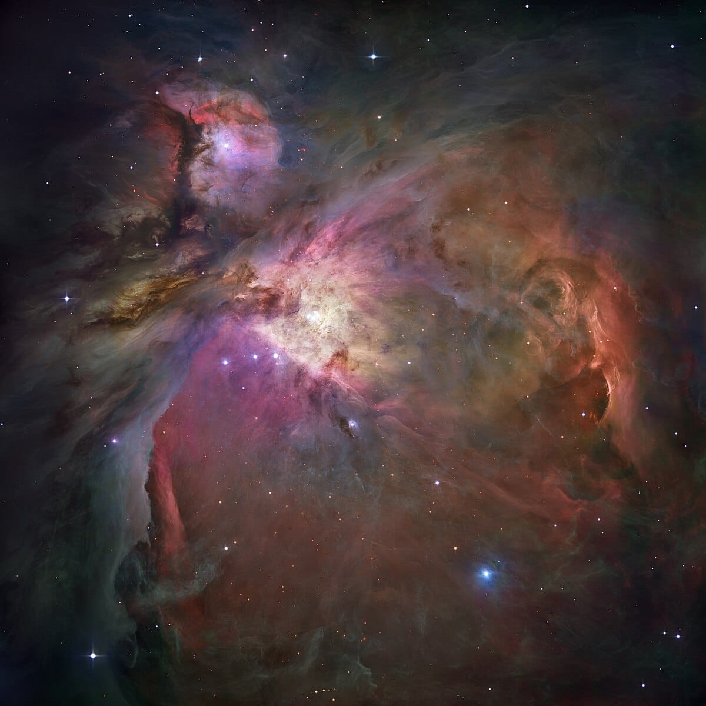
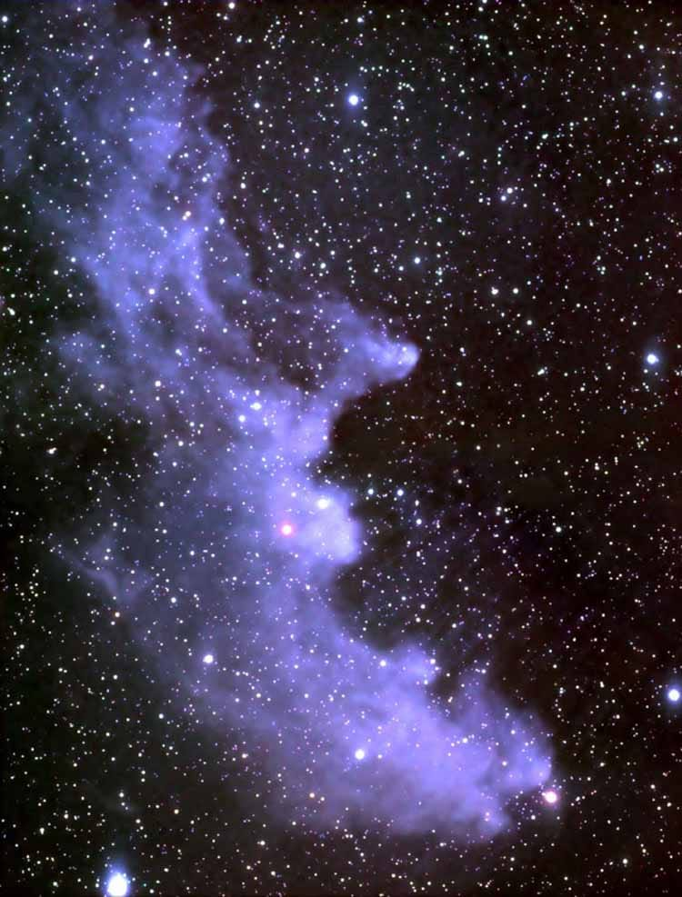
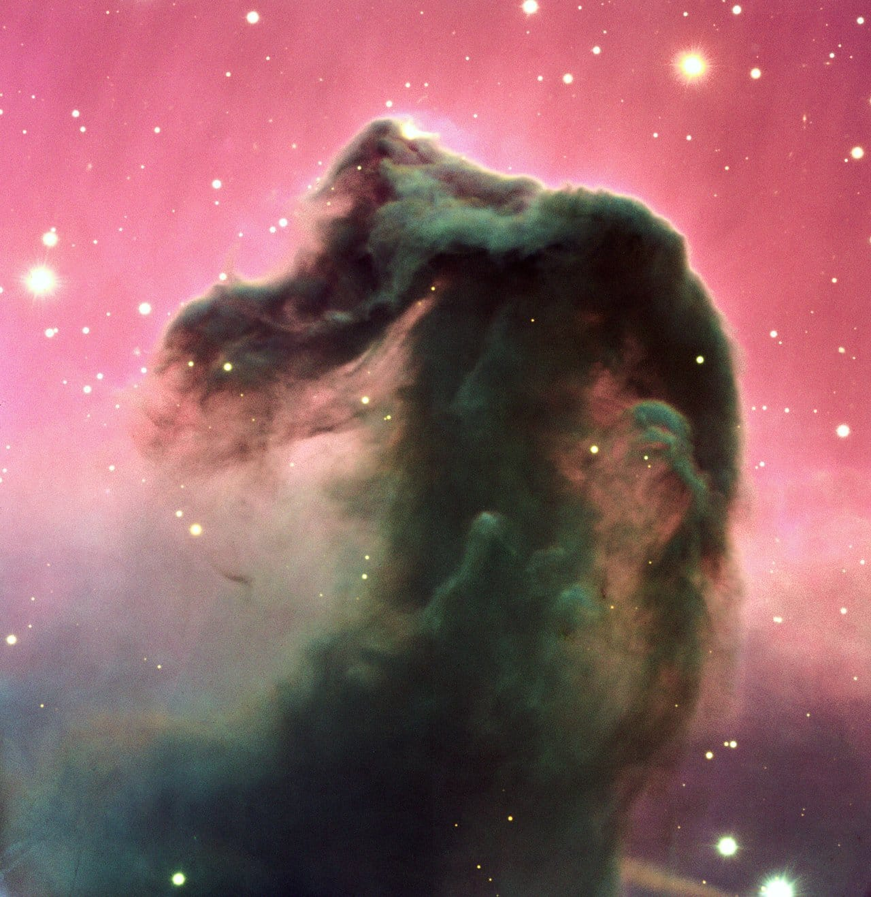
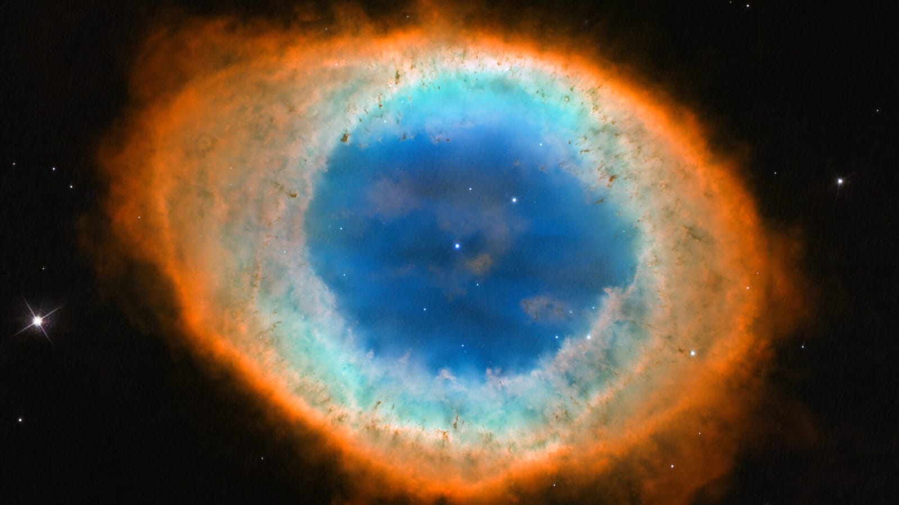
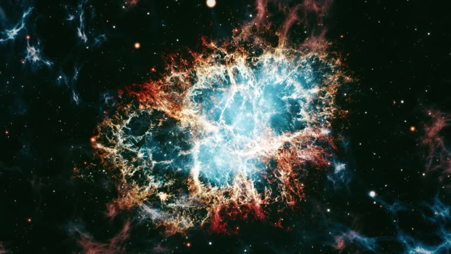

Nebulosas

¿Qué son nebulosas?
Nebulosas de emisión
Nebulosa de reflexión
Nebulosas oscuras
Nebulosa restos de supernovas
Nebulosas planetarias
Nebulosas
¿Qué son las nebulosas?
Las nebulosas son enormes nubes de gas (principalmente hidrógeno y helio) y polvo en el espacio. Algunas brillan con luz propia y otras reflejan o bloquean la luz de estrellas cercanas.
Son cuna de estrellas, como maternidades cósmicas.
Tipos de nebulosas:
-Nebulosas de emisión
Brillan con luz propia porque el gas se ioniza por la radiación de estrellas cercanas.

Ejemplo: Nebulosa de Orión.
Color típico: Rojizo (por el hidrógeno ionizado).
-Nebulosas de reflexión
Reflejan la luz de estrellas cercanas pero no brillan por sí solas.

Color típico: Azul (por cómo se dispersa la luz).
-Nebulosas oscuras
Bloquean la luz detrás de ellas, como sombras cósmicas.
Hechas de gas y polvo denso.

Ejemplo: Nebulosa Cabeza de Caballo.
-Nebulosas planetarias
Se forman cuando una estrella como el Sol muere y expulsa sus capas exteriores.
Nada que ver con planetas, el nombre viene porque se ven redonditas.

Ejemplo: Nebulosa del Anillo.
-Restos de supernova
Lo que queda cuando una estrella masiva explota.
Son super energéticas y ricas en elementos pesados.

Ejemplo: Nebulosa del Cangrejo.
Nebulosas más famosas:
-Nebulosa de Orión (M42): Una de las más brillantes y mejor estudiadas. Está formando muchas estrellas nuevas.
-Nebulosa del Cangrejo: Restos de una supernova registrada en el año 1054. Muy energética.
-Nebulosa Cabeza de Caballo: Famosa por su forma icónica. Es una nebulosa oscura.
-Nebulosa de la Hélice: Nebulosa planetaria parecida a un ojo.
-Nebulosa del Águila (con los Pilares de la Creación): Súper famosa por la imagen del Hubble. Está creando estrellas activamente.